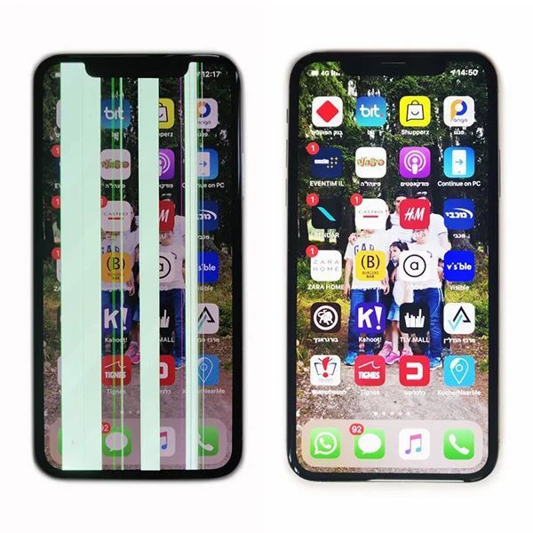
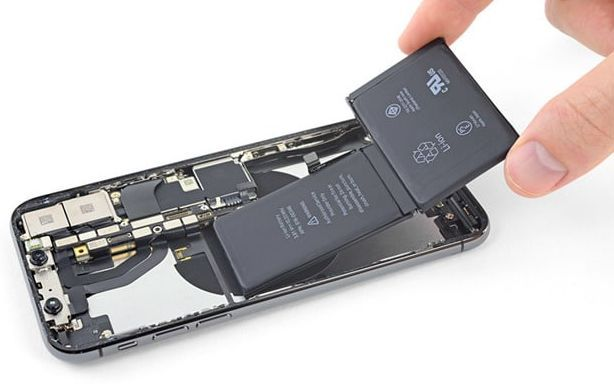
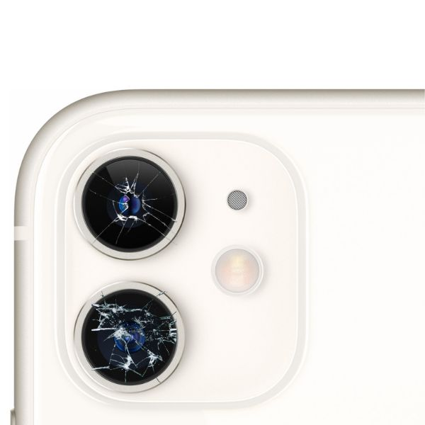

Types of Repairs
Screen Repair
When you bring in a device with a cracked or damaged screen, I carefully remove the shattered glass and replace it with a brand-new display. I ensure the fit is perfect, and I test the touch sensitivity and color quality so your screen looks and works just like it did when it was brand new.
Battery Replacement
If your device’s battery doesn’t hold a charge or drains too quickly, I remove the old battery and replace it with a fresh, high-quality one. I check the connections to make sure everything is secure and run tests to ensure your device powers up reliably and lasts all day.
Camera Replacement
For devices with a blurry or non-functional camera, I gently remove the faulty camera module and replace it with a new, manufacturer-quality part. Once installed, I test the focus, clarity, and all camera functions to make sure you're ready to capture life's best moments again.
Choosing the Right Screen: OLED vs. LCD
At Dick's Repairs, we believe in giving our customers the choice. Whether you're looking to save some money or you want the absolute best display quality, we offer two options when it comes to screen repairs: OLED and LCD.
OLED Screens: The Premium Option
OLED (Organic Light Emitting Diode) screens are top-of-the-line when it comes to display technology. They’re known for their stunning color accuracy, deeper blacks, and overall vibrant image quality. Each pixel in an OLED screen emits its own light, so there’s no need for a backlight like in other types of displays. This allows for true blacks and incredible contrast, making it ideal for anyone who wants a premium viewing experience.
If you’re someone who values clarity and richness in your screen, the OLED is the way to go. It’s perfect for watching videos, gaming, or just showing off those crisp photos. While the price is higher, you get what you pay for—an unparalleled screen that will make your device feel brand new.
LCD Screens: The Cost-Effective Solution
On the other hand, LCD (Liquid Crystal Display) screens are a solid option if you're looking for something more budget-friendly. LCDs rely on a backlight, which shines through the liquid crystals to display the image. While the colors might not pop quite as dramatically as OLED, LCDs are still very reliable and offer a good viewing experience for most everyday tasks.
If you're on a budget but still need your device looking good as new, an LCD repair is a smart choice. It offers great value without sacrificing functionality.
Your Choice, Your Budget
Ultimately, we want you to be in control of your repair. If you're looking for top-tier performance, the OLED option will deliver. But if you're more concerned about saving a few bucks, the LCD is an excellent alternative that still brings solid performance.
Whichever option you choose, we make sure you're getting a repair that's both reliable and tailored to your needs. At Dick's Repairs, quality and transparency are key, so you can feel confident in your decision.